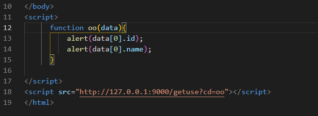
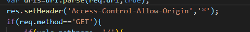

1.什么是跨域
当浏览器从一个域名的网页访问另一个域名的网页的时候，服务器端口，域名，协议有任何一个不同，就是跨域
2.解决方法
第一种：jsonp

什么是jsonp：
jsonp的特点：
jsonp只支持get请求，不支持post请求
在HTML中，凡是原生有src属性的，都具有http请求协议，不受跨域的影响
第二种：CORS(跨域资源共享机制)

什么是CORS：
跨域资源共享(CORS) 是一种机制，它使用额外的 HTTP 头来告诉浏览器 让运行在一个 origin (domain) 上的Web应用被准许访问来自不同源服务器上的指定的资源。当一个资源从与该资源本身所在的服务器不同的域、协议或端口请求一个资源时，资源会发起一个跨域 HTTP 请求。
CORS的文档：
https://developer.mozilla.org/zh-CN/docs/Web/HTTP/Access_control_CORS